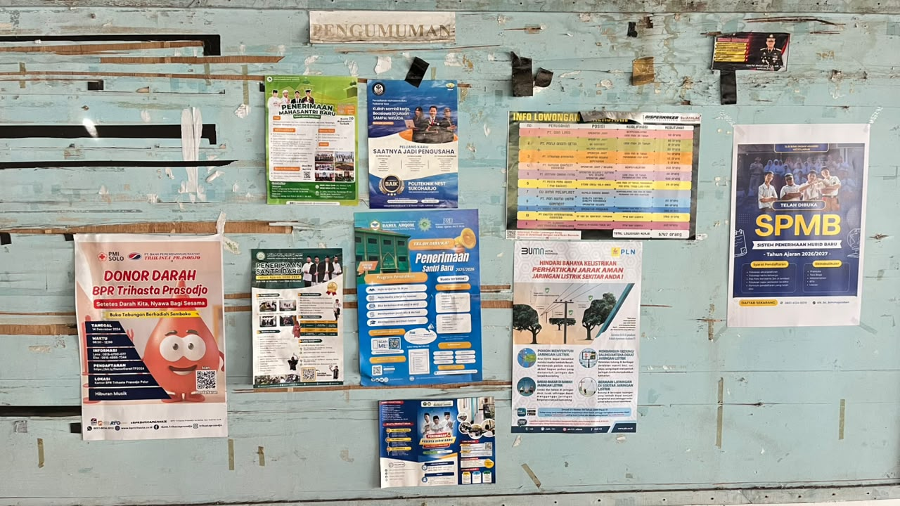
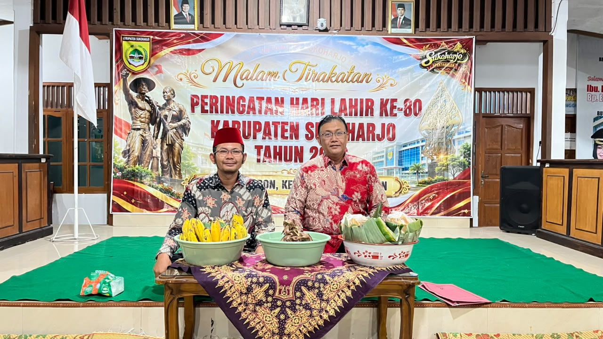
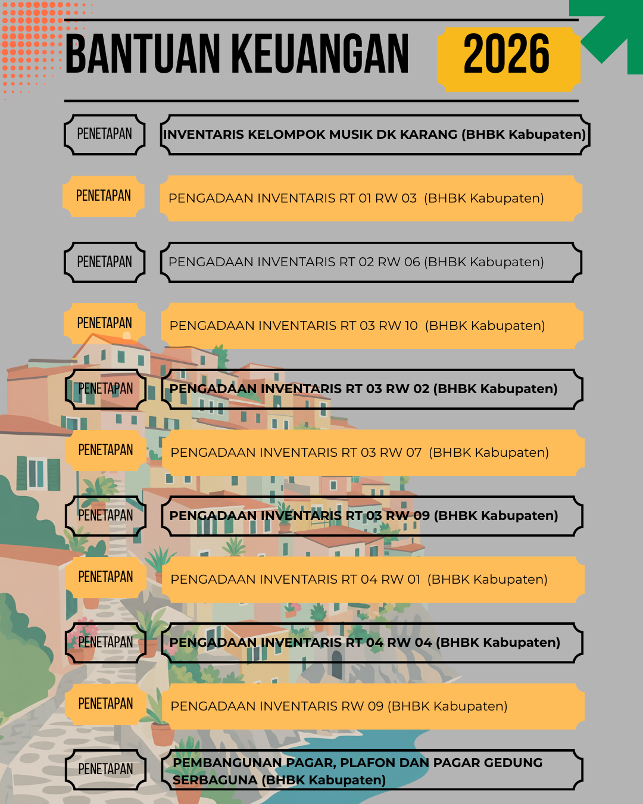
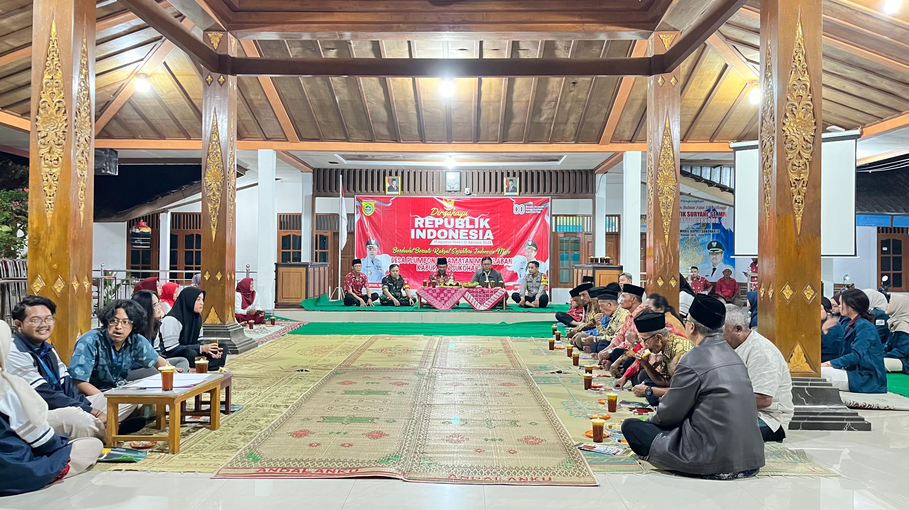
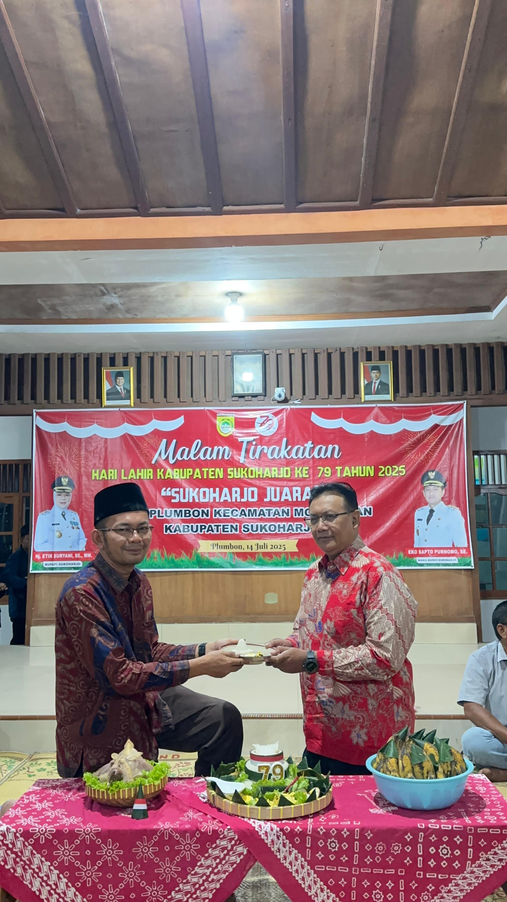
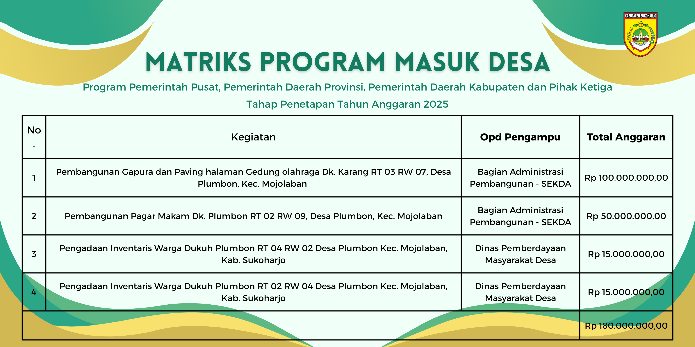

Warta Informasi & Dokumentasi Desa Plumbon
Kumpulan Liputan Kegiatan Pemerintahan, Keterbukaan PPID, Pembangunan, dan Budaya Desa Plumbon
Warta & Kegiatan Resmi Desa Plumbon
Publikasi resmi kegiatan pemerintahan, transparansi program, dan pemberdayaan masyarakat bersumber dari plumbon-sukoharjo.desa.id/berita.

27 Mar 2026Publikasi Matriks Program Pembangunan Desa Plumbon Tahun Anggaran 2026
Transparansi rincian rencana kerja dan matriks pelaksanaan kegiatan pembangunan fisik serta pemberdayaan masyarakat Desa Plumbon Tahun 2026.

18 Feb 2026Musrenbangdes Penyusunan RKPD & RKPDes Desa Plumbon Berjalan Partisipatif
Pemerintah Desa Plumbon bersama BPD, LPMD, dan perwakilan masyarakat menggelar Musyawarah Perencanaan Pembangunan Desa di Balai Desa Plumbon.

20 Feb 2026Penguatan Keterbukaan Informasi Publik Melalui Papan Informasi PPID Desa Plumbon
Komitmen transparansi informasi penyelenggaraan pemerintahan dan anggaran desa melalui penyediaan Papan Informasi PPID di Balai Desa Plumbon.

05 Feb 2026Sinergi Mahasiswa KKN dan Pemerintah Desa Plumbon dalam Pemberdayaan Masyarakat
Pelaksanaan program kerja Kuliah Kerja Nyata (KKN) mahasiswa bersama perangkat desa, kader PKK, dan pemuda di Desa Plumbon.

28 Jan 2026Khidmat Malam Tirakatan dan Peringatan Sejarah Berdirinya Desa Palumbon (1741 M)
Warga dan jajaran Pemerintah Desa Plumbon menggelar doa bersama serta refleksi sejarah berdirinya Desa Palumbon sejak tahun 1741 Masehi.

12 Jan 2026Komitmen Pemerintah Desa Plumbon dalam Mewujudkan Tata Kelola Desa Antikorupsi
Penerapan standar pelayanan publik bebas pungutan liar, akuntabilitas APBDes, dan partisipasi pengawasan masyarakat di Desa Plumbon.